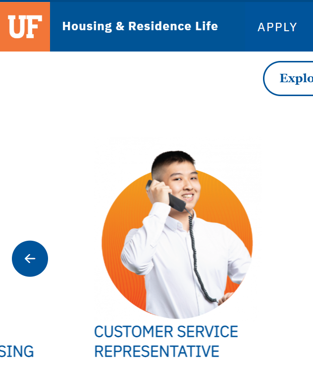
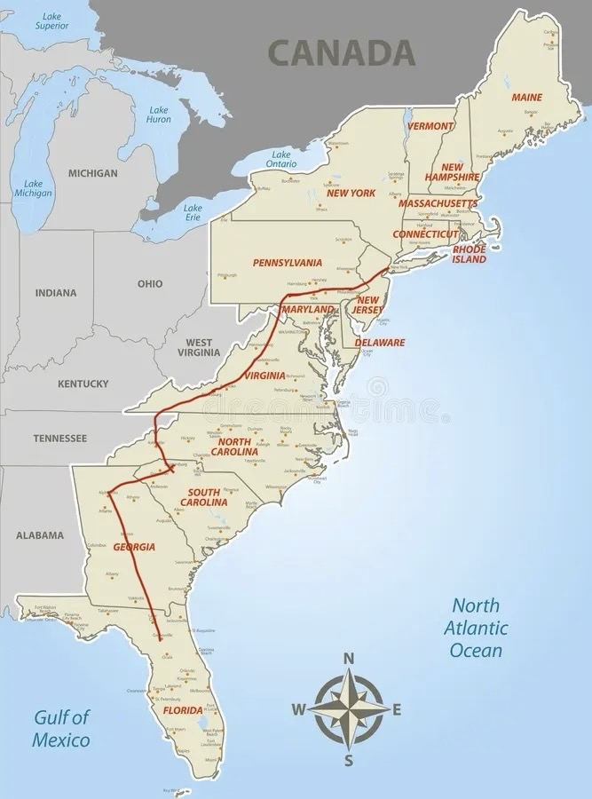
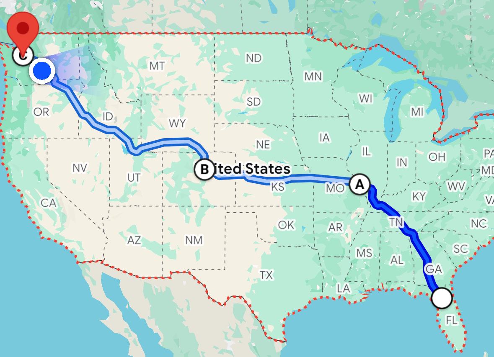

About
Outside of coursework and research, I have sought experiences that emphasize communication, responsibility, and hands-on problem solving.
Customer Service Experience
From May 2023 to May 2024, I worked as a customer service representative with University of Florida Housing. In this role, I regularly interacted with students, families, and staff, helping resolve housing-related concerns and providing front-line support in a high-traffic environment. The position strengthened my ability to communicate clearly, remain composed under pressure, and work effectively with people from diverse backgrounds.
I was also featured on the UF Housing website during my time in the role.
Automotive Shop Mechanic
During the summer of 2024, I worked at an automotive repair shop, where I gained practical, hands-on experience with mechanical systems and diagnostics.
Road Travel
In my free time, I enjoy road trips as a way to explore new places and challenge myself through long-distance travel. In Spring 2025, I drove from Gainesville to New York City, and in Summer 2025, I completed a cross-country drive from Gainesville to Seattle.
 Other Interests
I am also interested in photography and cooking. While these are personal hobbies rather than formal pursuits, they provide a creative outlet and a balance to my technical work.